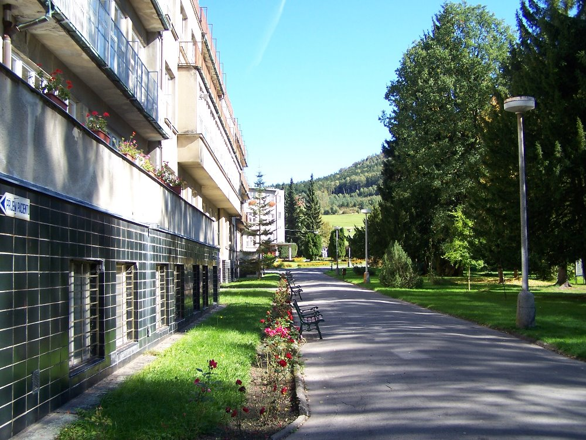
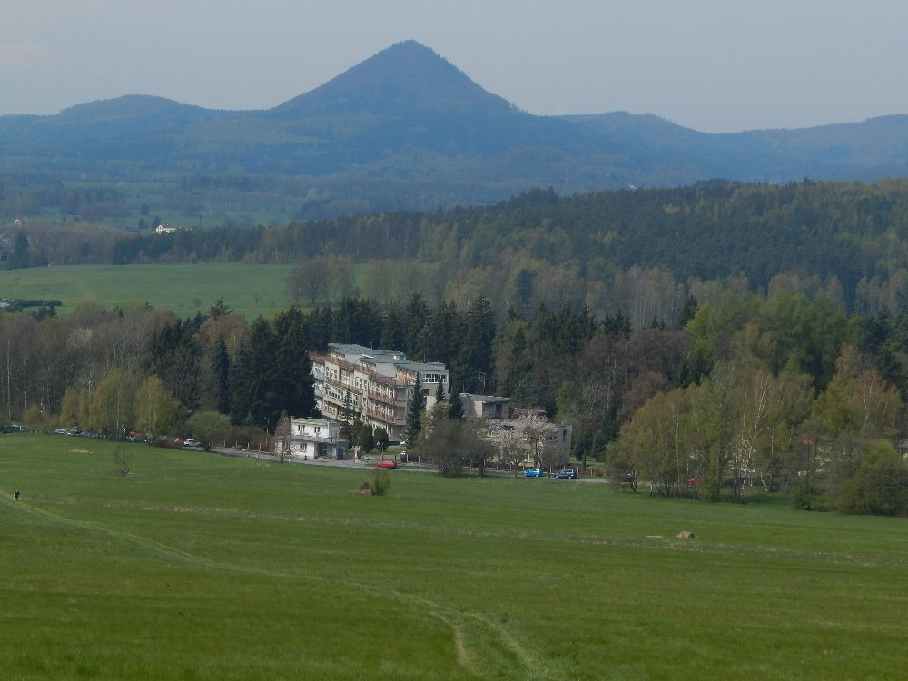

Úvod
Léčebna se nachází v Chráněné krajinné oblasti Lužické hory v libereckém regionu asi 1 km severně od města Cvikov v okrese Česká Lípa. Leží na jihozápadním svahu v nadmořské výšce 400m. Pavilony jsou umístěny v krásném oploceném lesoparku o rozloze 9,5 hektaru. Území má výhodné bioklimatické podmínky. Je málo větrné, ale vzhledem ke svému spádu nemá předpoklady k hromadění chladného vlhkého vzduchu a smogu. Dostává o 20% více tepla ze slunečního záření než rovina, je chráněna před studenými větry severních směrů. Oblast je mírně teplá s průměrnou roční teplotou 7,4°C a průměrnými ročními srážkami 717 mm. Slunce svítí v průměru 1708 hodin v roce. Ústav má vlastní zdroj vody, vodojem i čističku odpadních vod. Pavilony jsou vytápěny zemním plynem.
- Léčebna přijímá děti od 1 do 15 let věku buď samotné, nebo děti od 1 do 6 let v doprovodu blízké osoby (nejčastěji matky).
- Děti musí být při nástupu do léčebny řádně očkovány dle platného očkovacího kalendáře!
- Délka pobytu je individuální, u dětí samotných 8 - 10 týdnů dle závažnosti onemocnění, děti s doprovodem 6 týdnů. Pobyt dítěte i doprovodné osoby je plně hrazen ze zdravotního pojištění.
- Během pobytu se děti účastní mnoha výletů do okolí.
- Součástí Dětské léčebny je i alergologická poradna poskytující odborné služby pacientům z léčebny i okolí.
- Stravovací provoz zajišťuje racionální výživu pacientů založenou na sníženém obsahu živočišných bílkovin a tuků. Je zajištěna příprava diet podle systému stravování v nemocnicích.

Historie
V roce 1908 se Spolek pro plicní choroby ve Cvikově usnesl, že založí ústav pro léčení tuberkulózy. Vybral pozemek pod Kalvárií a koncem roku 1910 dokončil stavbu Českého zemského jubilejního ústavu pro skrofulosní děti. V bývalé restauraci byla správa ústavu a kanceláře. Finančně akci zajišťoval stát. Prvním vedoucím lékařem byl císařský rada Dr. Horner, ošetřovatelskou službu vykonávaly sestry z řádu Vincenta de Pauly.
V roce 1926 bylo zařízení přejmenováno na Zemský ústav pro tuberkulózní děti a mělo 30 pacientů v zimě a 60 v létě. Za tři roky začala rekonstrukce starých a stavba nových pavilonů tak, že v roce 1934 byly budovy dokončeny. Léčebna měla tehdy 200 lůžek a patřila k nejmodernějším ústavům svého druhu ve střední Evropě.
Po mnichovských událostech se děti i český personál odstěhovali do zemského ústavu v Luži a objekty později sloužily jako německý válečný lazaret. Po válce se zařízení vrátilo svému původnímu účelu, léčení tuberkulózy dětí, ovšem značně sešlé a zanedbané. Díky úsilí zaměstnanců i zásluhou darů ze Švýcarské mise mohli v listopadu 1945 přijít první pacienti. V roce 1947 zde byla ustavena odbočka Masarykovy ligy proti TBC, předsedou se stal tehdejší vedoucí léčebny Dr. Tilšer.
Po snížení výskytu onemocnění tuberkulózou se v roce 1961 zařízení změnilo v Dětskou léčebnu pro nespecifická onemocnění plic a horních cest dýchacích se 150 lůžky. Od července 1991 je Dětská léčebna samostatnou příspěvkovou organizací, jejímž zřizovatelem je Liberecký kraj. Děti v doprovodu blízké osoby jezdí do naší léčebny již od roku 1990.

Kontakty
Léčebna respiračních nemocí Cvikov, p.o., dětská léčebna
Ústavní 529/II
471 54 Cvikov
telefon - spojovatelka:
487 751 241-2
fax: 487 751 243
e-maily:
- primář:dlcvikov.primar@seznam.cz
- ředitel ing. Rudolf Fockedlcvikov.reditel@tiscali.cz
- hlavní sestra, paní Helena Rampouchovádlcvikov.hlsestra@seznam.cz
- přijímací kancelář, paní Milena Haklovádlcvikov.prijimacka@tiscali.cz
Fakturační adresa:
Léčebna respiračních nemocí Cvikov, příspěvková organizace
Martinovo Údolí 532/II
471 54 Cvikov
IČO: 00673951
DIČ: CZ00673951